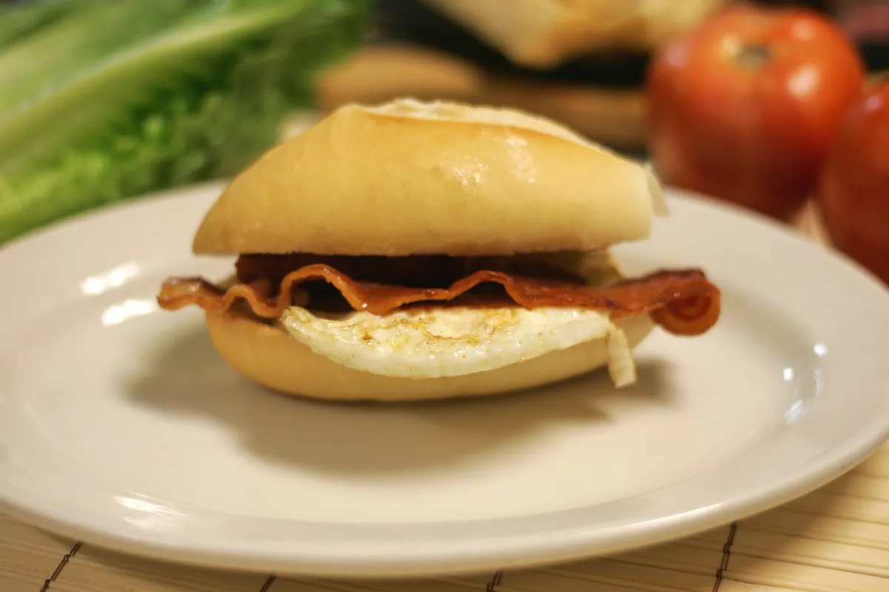
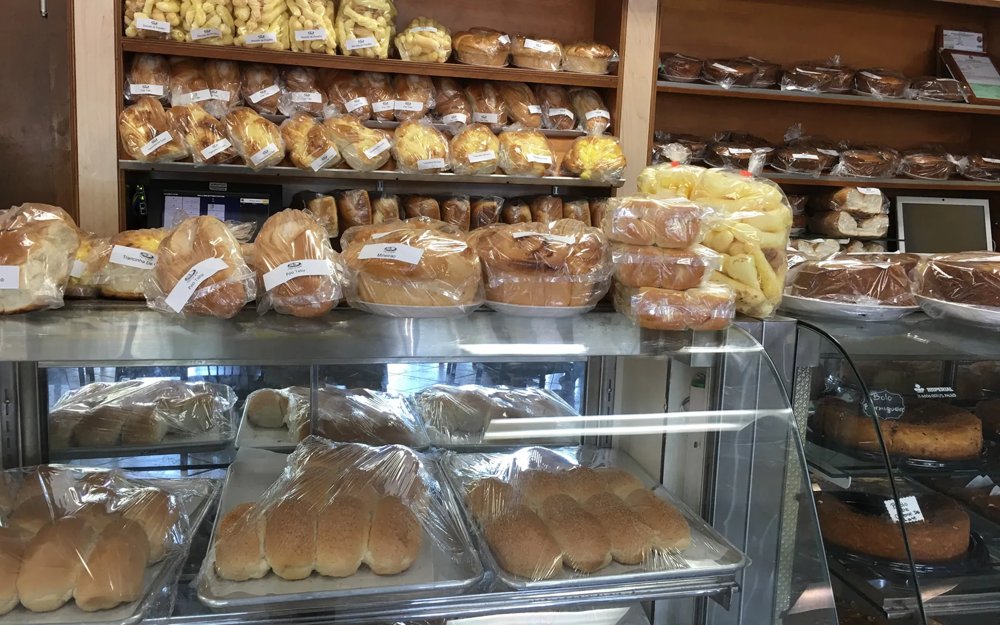
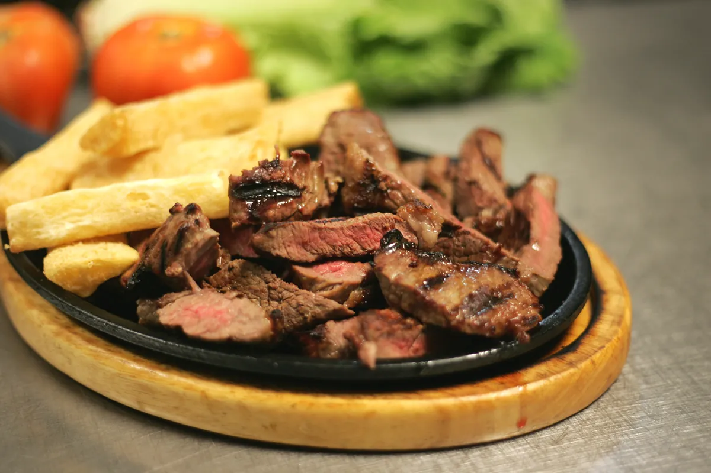
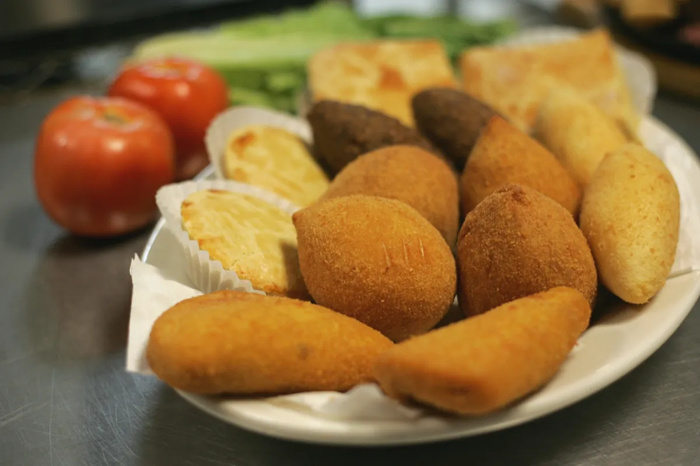
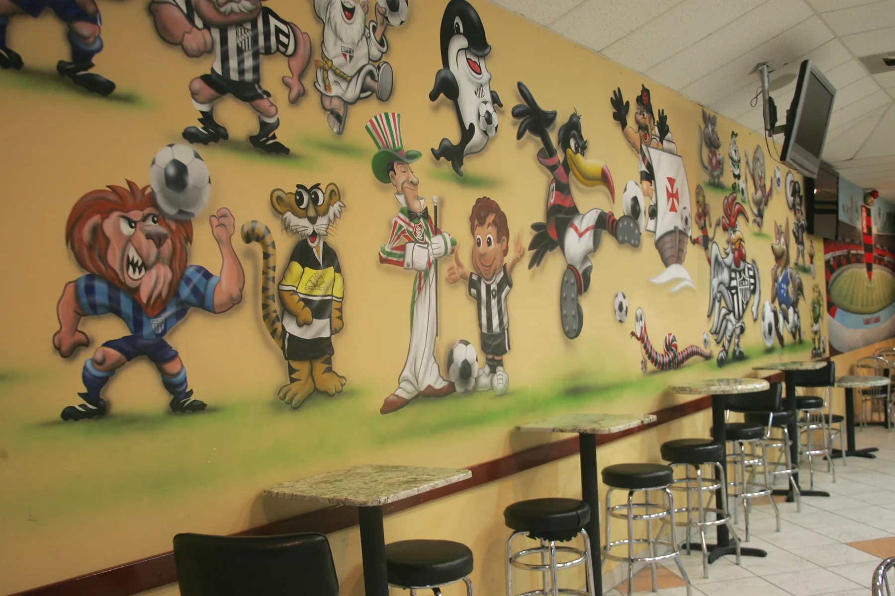

06h

Café da manhã
Café passado na hora, pão quentinho e aquele cheirinho de padaria. Pão francês com ovos e bacon na chapa.
Prévia de design · não é o site oficial da Padaria 2000
Pular para o conteúdo
Deerfield Beach · Coconut Creek · desde 2000
Uma padaria brasileira que vive o dia inteiro: pão francês, coxinha, prato na chapa, bolo a libra e encomenda para festa no sul da Flórida.
--:--
Aberta todos os dias a partir das 6h.
Um balcão, quatro momentos
06h

Café passado na hora, pão quentinho e aquele cheirinho de padaria. Pão francês com ovos e bacon na chapa.
11h30

Contrafilé na chapa com fritas, calabresa acebolada: o prato que o Brasil come no balcão.
16h

Coxinha, empada, croquete de mandioca. E o horário-limite das encomendas.
19h
Bolos a libra, docinhos e pavê de morango, direto da vitrine.
Encomenda sem vai e volta
Escolha a unidade, os salgados, o bolo e o dia da retirada. O site escreve o pedido; depois é só ligar ou mandar pela DM do Instagram, do jeito que a padaria já recebe encomendas hoje.
Sábado, depois do último cafezinho
Sertanejo ao vivo todo sábado a partir das 22h, na unidade de Deerfield Beach. Música boa, dança e gente animada.
7 de nov. · Aniversário do Garotin Sanfoneiro, com Garotinho & Amigos
Reserve para 15 pessoas ou mais na Viola do Didi e ganhe 1 bolo para cantar os parabéns. O bolo serve 15 pessoas.

Em dia de jogo do Brasil o salão enche: telão, TVs espalhadas pelo salão, café e salgado no intervalo.
Desde 2000
Fundada em 2000 por Edvaldo Leão, a padaria começou em Deerfield Beach com um foco: pão e bolo feitos com cuidado. Hoje atende o sul da Flórida em dois balcões, Deerfield Beach e Coconut Creek.
“We work with dedication, care and affection for YOU!”Nas palavras da própria padaria
Colonnade Plaza
2100 SW 10th St, Suite C
Deerfield Beach, FL 33442
| Seg | 6h – 22h |
|---|---|
| Ter | 6h – 22h |
| Qua | 6h – 22h |
| Qui | 6h – 22h |
| Sex | 6h – 22h |
| Sáb | 6h – 22h |
| Dom | 7h – 22h |
★ 4.1 · 799 avaliações no Google
Hillsboro Blvd
4420 W Hillsboro Blvd, Suite 101
Coconut Creek, FL 33073
| Seg | 6h – 20h |
|---|---|
| Ter | 6h – 20h |
| Qua | 6h – 20h |
| Qui | 6h – 20h |
| Sex | 6h – 20h |
| Sáb | 6h – 20h |
| Dom | 7h – 14h |
★ 4.1 · 158 avaliações no Google